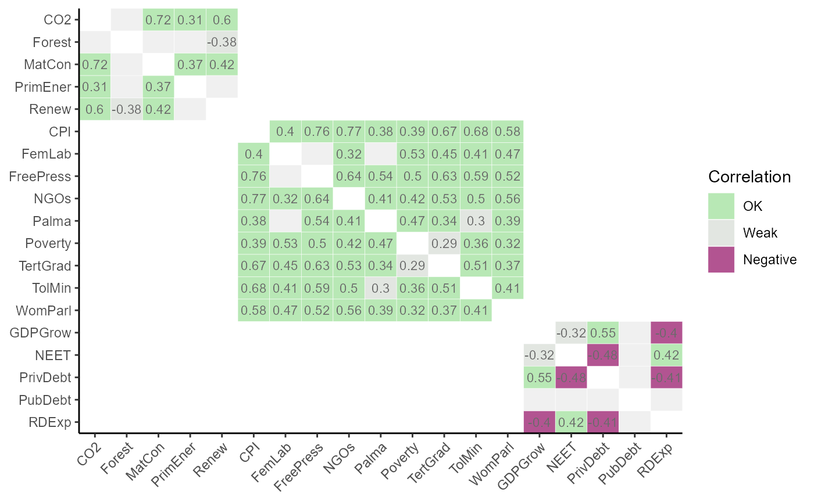

Generates heatmaps of correlation matrices using ggplot2, which can be tailored according to the grouping and structure
of the index. This enables correlating any set of indicators against any other,
and supports calling named aggregation groups of indicators. The withparent argument generates tables of correlations only with
parents of each indicator. Also supports discrete colour maps using flagcolours, different types of correlation, and groups
plots by higher aggregation levels.
plot_corr(
coin,
dset,
iCodes = NULL,
Levels = 1,
...,
cortype = "pearson",
withparent = FALSE,
grouplev = NULL,
box_level = NULL,
showvals = TRUE,
flagcolours = FALSE,
flagthresh = c(-0.4, 0.3, 0.9),
pval = 0.05,
insig_colour = "#F0F0F0",
text_colour = NULL,
discrete_colours = NULL,
box_colour = NULL
)The coin object
The target data set.
An optional list of character vectors where the first entry specifies the indicator/aggregate codes to correlate against the second entry (also a specification of indicator/aggregate codes)
The aggregation levels to take the two groups of indicators from. See get_data() for details.
Optional further arguments to pass to get_data().
The type of correlation to calculate, either "pearson", "spearman", or "kendall" (see stats::cor()).
If aglev[1] != aglev[2], and equal TRUE will only plot correlations of each row with its parent.
If "family", plots the lowest aggregation level in Levels against all its parent levels.
If FALSE plots the full correlation matrix (default).
The aggregation level to group correlations by if aglev[1] == aglev[2]. By default, groups correlations into the
aggregation level above. Set to 0 to disable grouping and plot the full matrix.
The aggregation level to draw boxes around if aglev[1] == aglev[2].
If TRUE, shows correlation values. If FALSE, no values shown.
If TRUE, uses discrete colour map with thresholds defined by flagthresh. If FALSE uses continuous colour map.
A 3-length vector of thresholds for highlighting correlations, if flagcolours = TRUE.
flagthresh[1] is the negative threshold. Below this value, values will be flagged red.
flagthresh[2] is the "weak" threshold. Values between flagthresh[1] and flagthresh[2] are coloured grey.
flagthresh[3] is the "high" threshold. Anything between flagthresh[2] and flagthresh[3] is flagged "OK",
and anything above flagthresh[3] is flagged "high".
The significance level for plotting correlations. Correlations with \(p < pval\) will be shown,
otherwise they will be plotted as the colour specified by insig_colour. Set to 0 to disable this.
The colour to plot insignificant correlations. Defaults to a light grey.
The colour of the correlation value text (default white).
An optional 4-length character vector of colour codes or names to define the discrete
colour map if flagcolours = TRUE (from high to low correlation categories). Defaults to a green/blue/grey/purple.
The line colour of grouping boxes, default black.
A plot object generated with ggplot2, which can be edited further with ggplot2 commands.
This function calls get_corr().
Note that this function can only call correlations within the same data set (i.e. only one data set in .$Data).
This function uses ggplot2 to generate plots, so the plot can be further manipulated using ggplot2 commands.
See vignette("visualisation) for more details on plotting.
# build example coin
coin <- build_example_coin(up_to = "Normalise", quietly = TRUE)
# plot correlations between indicators in Sust group, using Normalised dset
plot_corr(coin, dset = "Normalised", iCodes = list("Sust"),
grouplev = 2, flagcolours = TRUE)
